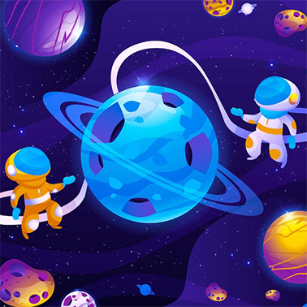
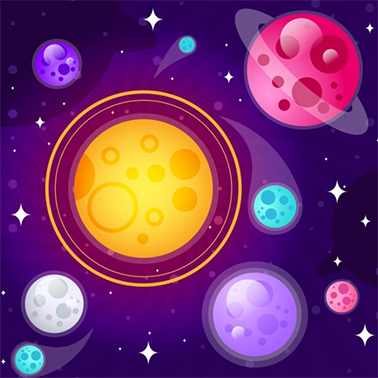
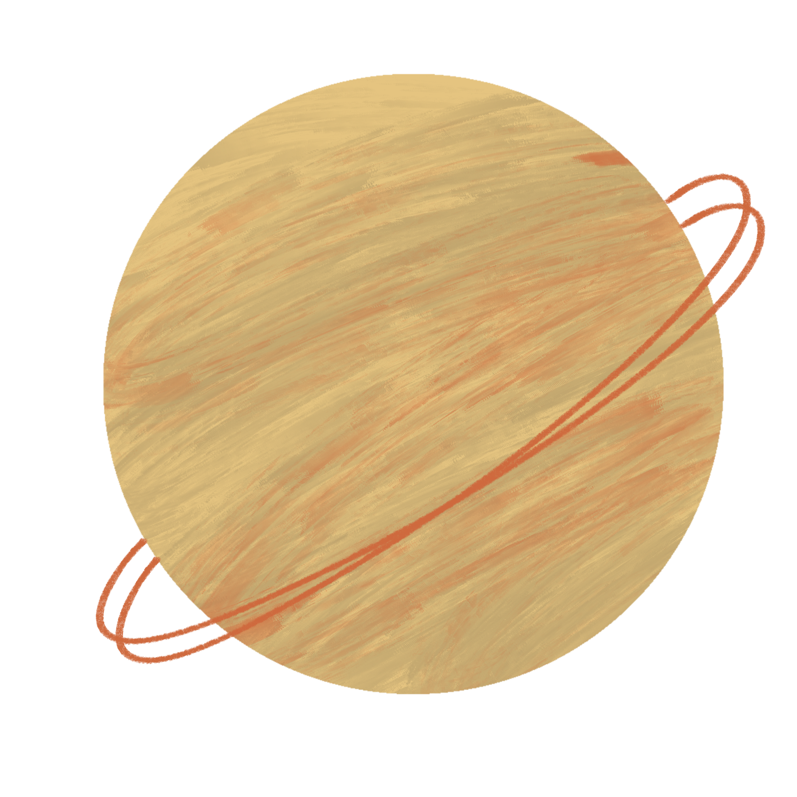
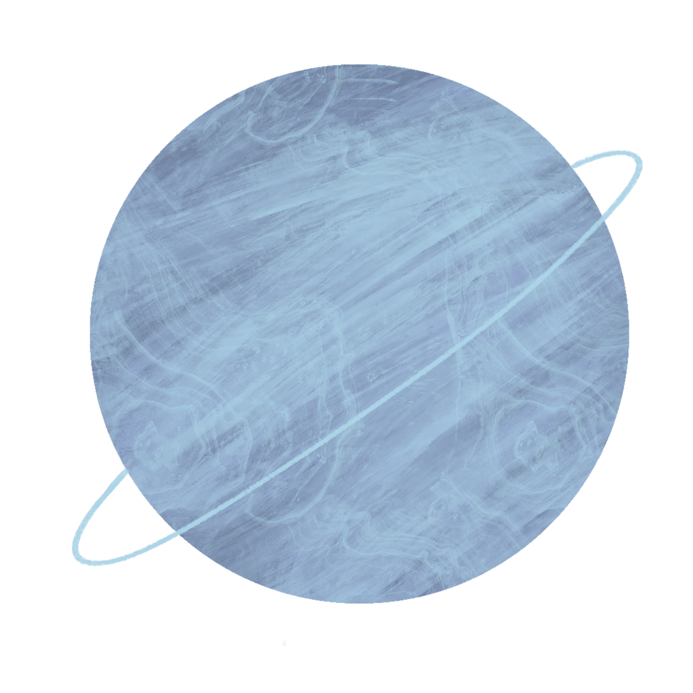
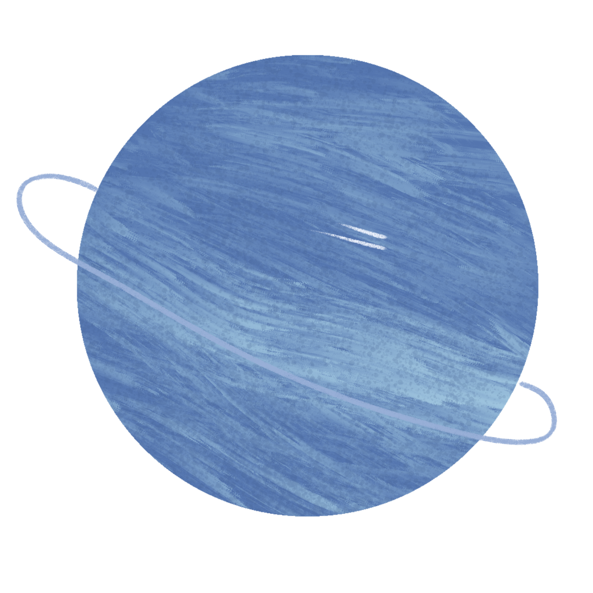
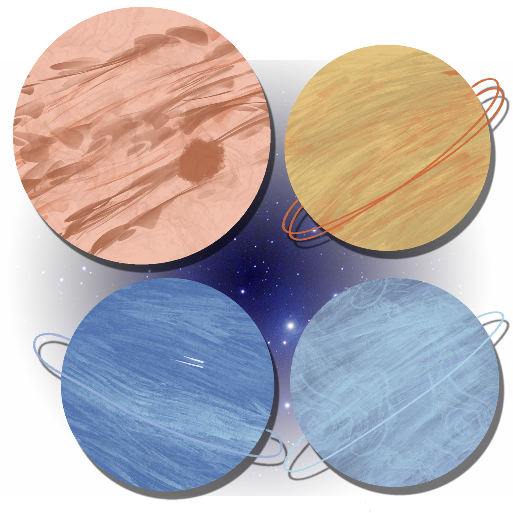
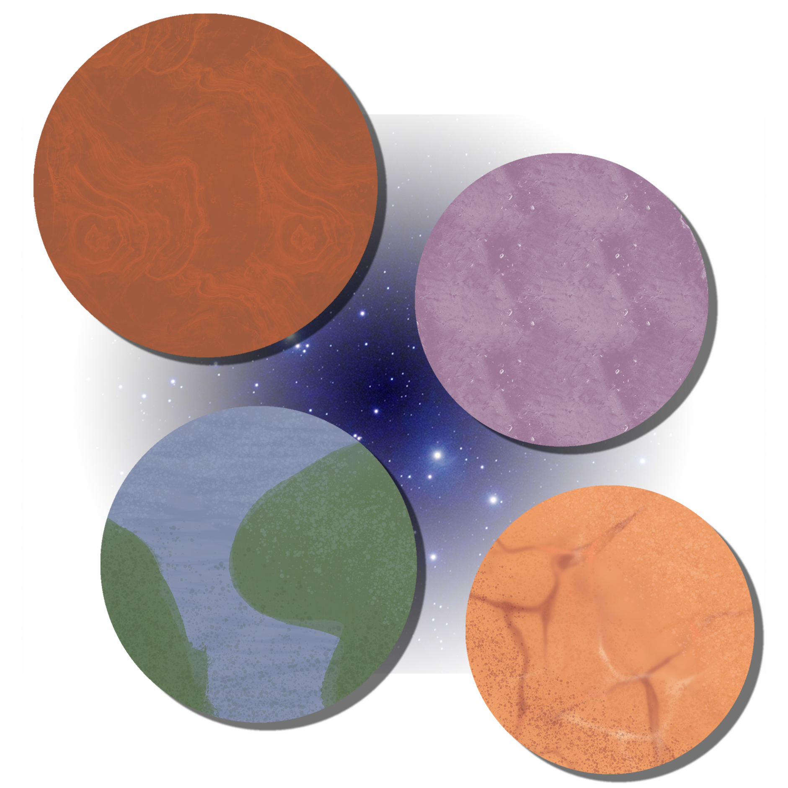

Enciclopédia Ilustrada do Universo
Ilustrações de Ana Grou
O SISTEMA SOLAR

O sistema solar é composto pelo Sol, oito planetas reconhecidos, planetas anões, uma infinidade de luas
e
incontáveis corpos menores, como cometas e asteroides.
A região interna contém o Sol e os planetas rochosos - Mercúrio, Vênus, Terra e Marte. Além dela,
situam-se o
cinturão de asteroides ou Cinturão Principal e os planetas gigantes gasosos, Júpiter, Saturno, Urano e
Neptuno.
O que vem a seguir é uma vasta região ocupada por Plutão e outros anões gelados. Depois deles estende-se
uma
enorme nuvem de cometas.
No total, o Sistema Solar tem 15 trilhões de km de diâmetro; os planetas ocupam uma zona que se estende
por
apenas 5 bilhões de km do Sol.
Urbain Le Verrier (1811-1977), astrônomo e matemático francês, depois de estudar irregularidades na
órbita
de
Urano previu a existência de Neptuno e calculou a sua posição em 1846. Ele pediu ao astrônomo alemão
Johann
Galle para observar o local previsto, e em uma hora o planeta foi descoberto.

A maior parte das órbitas do Sistema Solar tem a forma de elipses (círculos achatados). Mas, para a maioria
dos
planetas, as elipses são próximas de circulares. Apenas Mercúrio tem um grande desvio da circularidade. Os
planetas, e quase todos os asteroides, orbitam o Sol no mesmo sentido, o que coincide com a rotação dele em
torno do seu eixo. O período orbital de um planeta aumenta conforme a sua distância do Sol, e estende-se de
88
dias terrestres para Mercúrio, a cerca de 165 anos para Netuno, seguindo a terceira lei dos movimentos
planetários descoberta pelo astrônomo alemão Johannes Kepler em 1619. Além de períodos orbitais maiores, os
planetas mais distantes têm velocidades menores.
o sistema solar
O Sol:
Gira em torno do seu eixo no polo em 34 dias terrestres, mas no equador em 25 dias.
Mercúrio:
Orbita o Sol em 88 dias terrestres a uma distância média de 57,9 milhões de KM.
Vênus:
Orbita o sol em 224,7 dias terrestres a uma distância média de 108,2 milhões de KM.
Terra:
Órbita o Sol em 365,26 dias terrestres a uma distância média de 149,6 milhões de KM.
Marte:
Orbita o Sol em 687 dias terrestres a uma distância média de 227,9 milhões de KM
Júpiter:
Órbita o Sol em 11,86 anos terrestres a uma distância média de 778,4 milhões de KM.

Saturno:
Orbita o sol em 29,46 anos terrestres a uma distância média de 1,4 bilhões de KM.
Urano:
Orbita o sol em 84,01 anos terrestres a uma distância média de 2,9 bilhões de KM.


Netuno:
Órbita o Sol em 164,8 anos terrestres a uma distância média de 4,5 bilhões de KM.
A maior parte das órbitas do Sistema Solar tem a forma de elipses (círculos achatados). Mas, para a maioria dos
planetas, as elipses são próximas de circulares. Apenas Mercúrio tem um grande desvio da circularidade. Os
planetas, e quase todos os asteroides, orbitam o Sol no mesmo sentido, o que coincide com a rotação dele em
torno do seu eixo. O período orbital de um planeta aumenta conforme a sua distância do Sol, e estende-se de 88
dias terrestres para Mercúrio, a cerca de 165 anos para Netuno, seguindo a terceira lei dos movimentos
planetários descoberta pelo astrônomo alemão Johannes Kepler em 1619. Além de períodos orbitais maiores, os
planetas mais distantes têm velocidades menores.
Gigantes Gasosos

Os quatro planetas além do Cinturão de Asteroides são chamados gigantes gasosos. Esses mundos têm muitas
características em comum. Cada um exibe uma região central composta de rocha e gelo, envolta de um manto
líquido ou semissólido contendo hidrogênio e hélio, ou, no caso de Urano e Neptuno, uma combinação de gelo
de metano, amônia e água. Cada um deles tem uma atmosfera profunda, frequentemente tempestuosa, composta
principalmente por hidrogênio e hélio. Cada um exibe ainda um campo magnético significativo, mas o de
Júpiter é excepcional: 20.000 vezes mais poderoso que o campo magnético da Terra.
Cada um dos gigantes gasosos é orbitado por uma enorme quantidade de luas.
Finalmente, todos os gigantes mostram sistemas de anéis compostos de grãos de rocha ou gelo. Esses anéis
podem ter se originado já na formação do planeta, ou resultar de fragmentação de luas pelos poderosos campos
gravitacionais.
Podem, ainda, resultar de material removido das luas atuais.
Gigantes Rochosos
Os quatro planetas interiores do Sistema Solar são também chamados planetas rochosos. São muito menores que
os gigantes gasosos, com poucas ou nenhuma lua e não exibem anéis. Todos nasceram em estado líquido,
resultado das colisões que os formaram. Enquanto estavam derretidos, os materiais que os constituem foram
separados num núcleo metálico, envolto por um manto rochoso revestido por uma crosta. Posteriormente eles
sofreram um pesado bombardeio por meteoritos, que deixaram cicatrizes (crateras) em sua superfície, embora
na Terra essas crateras tenham sido quase inteiramente eruditas por processos geológicos e atmosféricos. Os
planetas rochosos são diferentes entre si. Vênus tem uma atmosfera densa, composta principalmente de dióxido
de carbono, enquanto Marte dispõe de um tênue envoltório gasoso, também de gás carbônico. Mercúrio
praticamente não tem atmosfera, ao contrário da Terra, com atmosfera rica em nitrogênio e oxigênio.

Urano tem 11 grandes anéis e mostra uma coloração azulada pela presença de metano atmosférico. Seu eixo de
rotação está inclinado quase de lado.